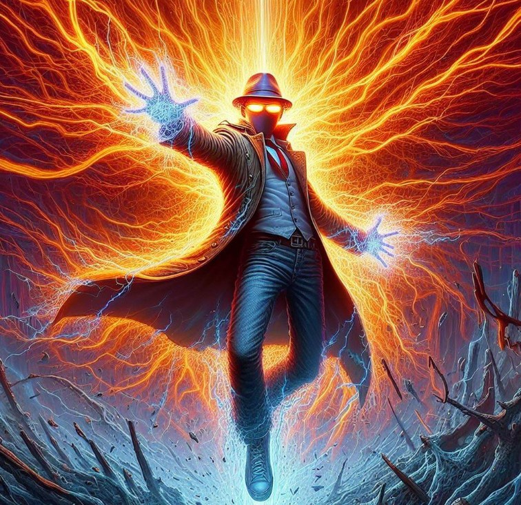

Friends Wiki
About The Game
Brawl Friends is a web based game where players can battle one another as their friends reimagined as powerful beings!
Select your character that you want to play as and create a strategy to ensure your success!
If you want to look more into the characters in the game, check out the Characters tab!
This wiki
was created in anticipation of the full games release, some of the stated statistics are subject to change.
These changes could include but are not limited to stat changes, move changes, or new characters.

How To Play
\Learning how to play is incredibly easy! Each player will select a move for their character to perform. The character on the field with the highest speed will generally move first. The goal of the game is to knock out all of your opponent's characters before yours are knocked out. This can be accomplished by setting up powerful moves to damage your opponent. Each player has a catered moveset unique to them, use them in intresting ways to outwit your opponent!
General Strategies
In order to win players will have to make predictions on what their opponent will do. For instance ensure you are using a character with a high defense value when the opponent is a heavy physical attacker. Speed is another large factor in this game as it allows your character to go first, securing a knockout before the opponent can move will ensure that they do not get their move off. Using an effect move may also prove beneficial when the opponent can not inflict a huge amount of damage, this sets up your charcter to outpace your opponent.